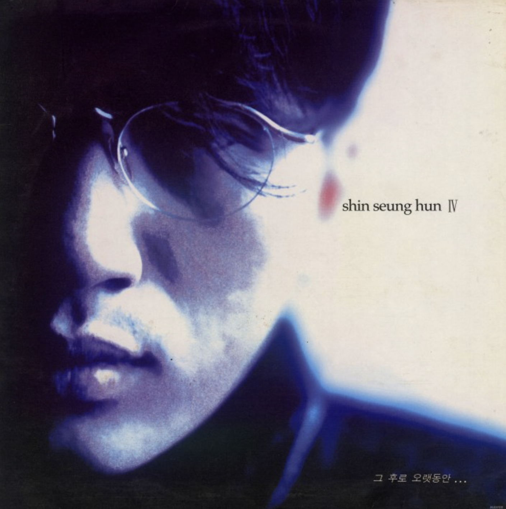
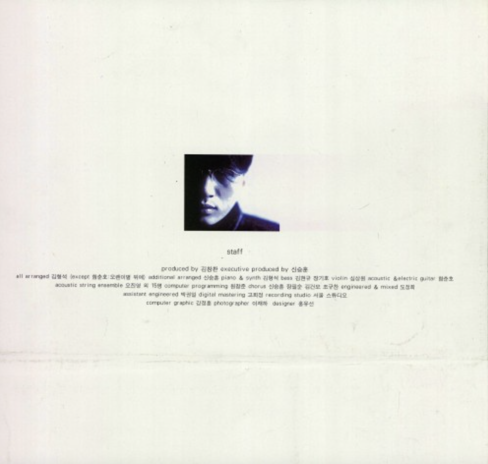
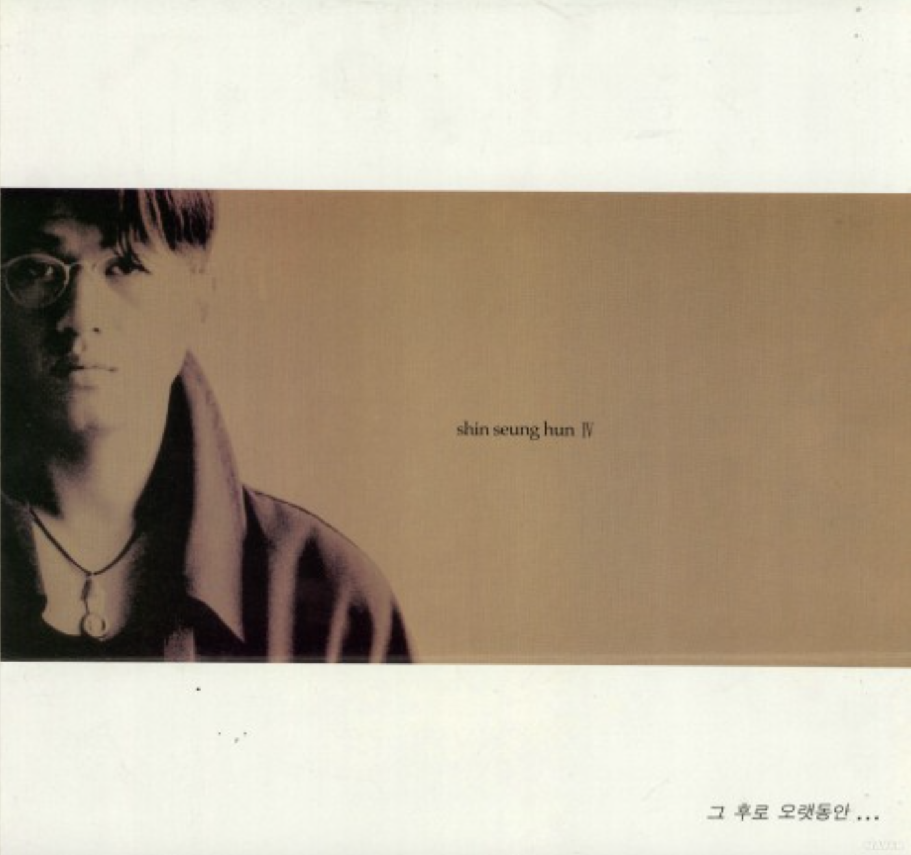
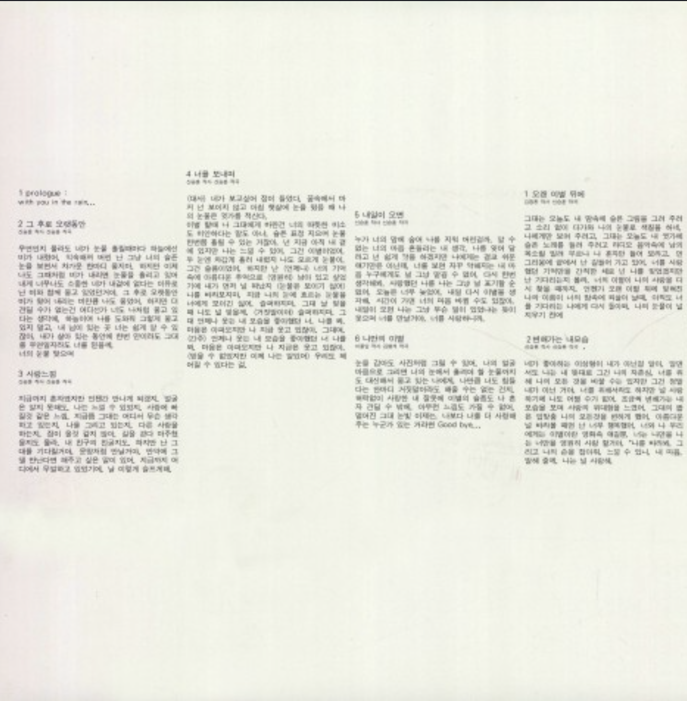
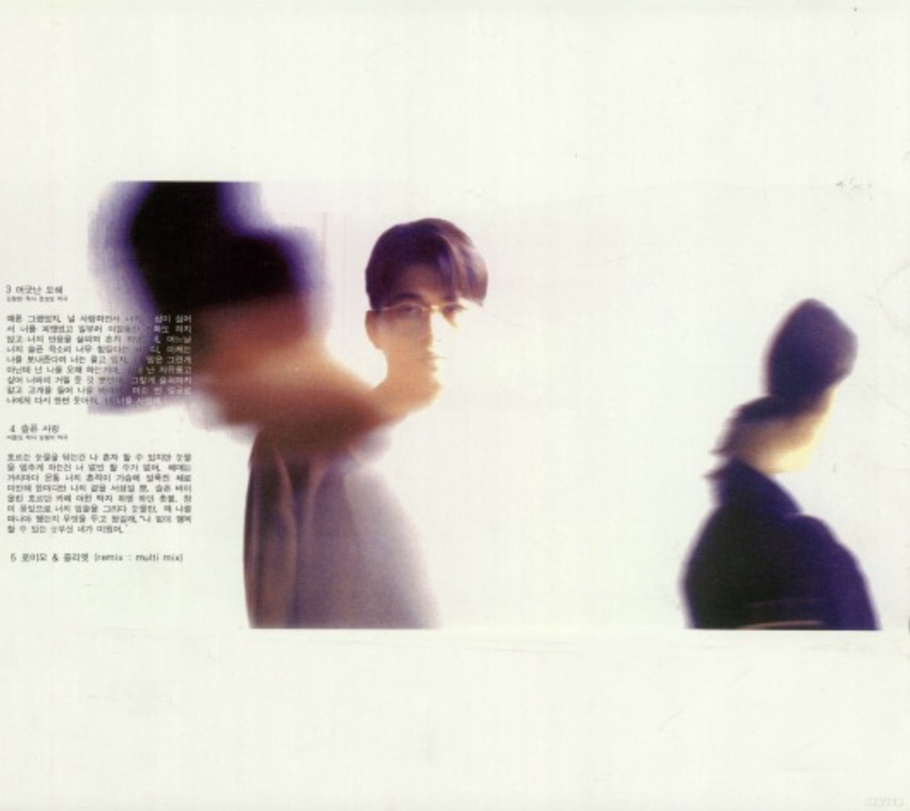
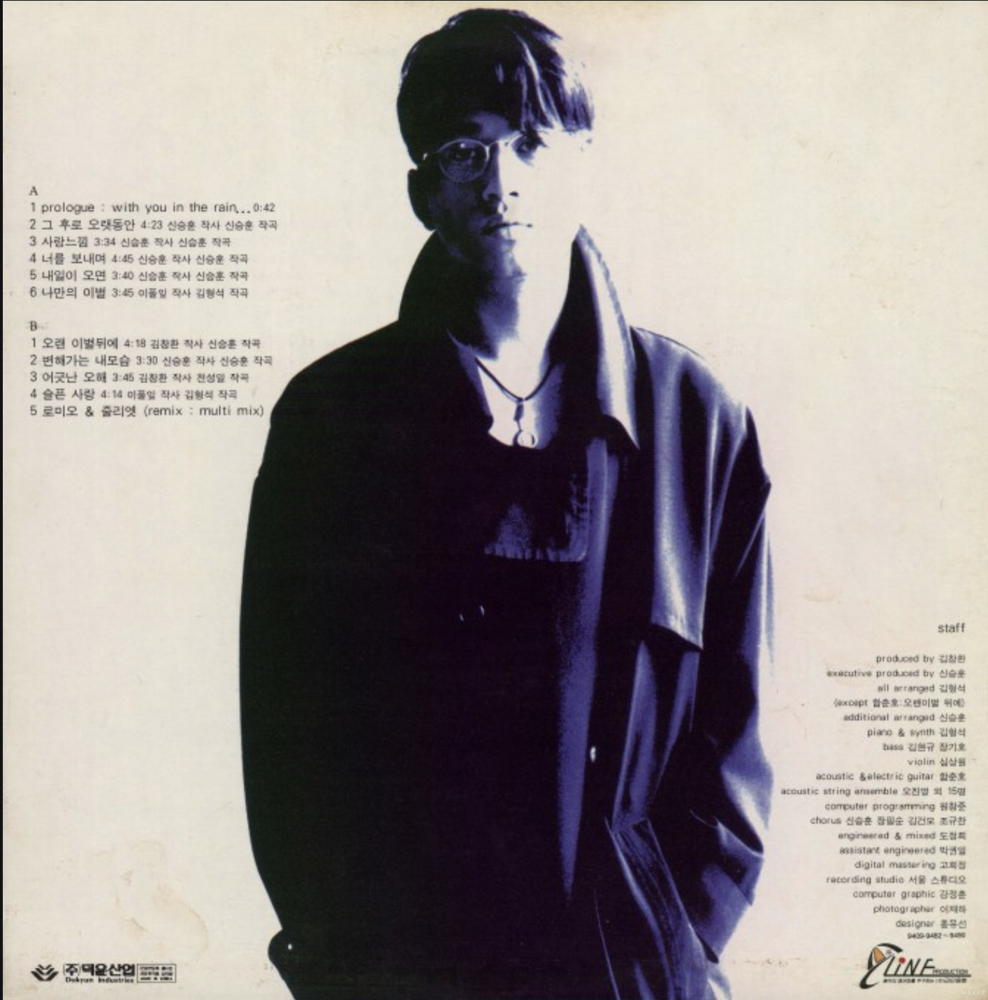

그 후로 오랫동안
<1994>
가수 소개
신승훈은 ‘발라드의 황제’로 불리는 대한민국 대표 발라드 가수이자 프로듀서이다. 감미로운 미성과 뛰어난 작곡 능력으로 1990년대 발라드 열풍을 이끌었으며, 음악방송 14주 연속 1위와 정규앨범 7연속 밀리언셀러 등 한국 가요계의 수많은 기록을 보유하고 있다.
앨범소개
국민 발라드 가수 '신승훈'의 4집 앨범 ! 그의 특유 미성의 애절한 발라드를 느껴볼 수 있다.인기 작곡가 김형석이 전곡 프로듀싱에 참여한 완성도 높은 앨범이다.
🎵





